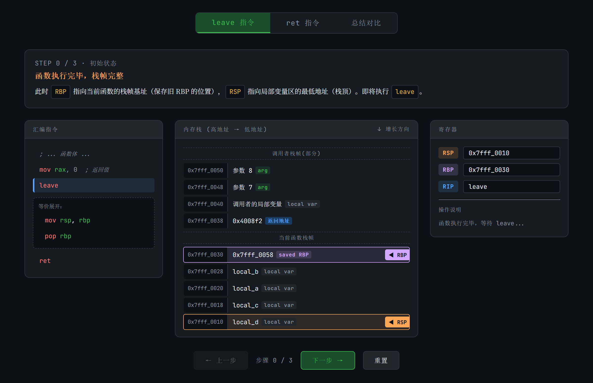
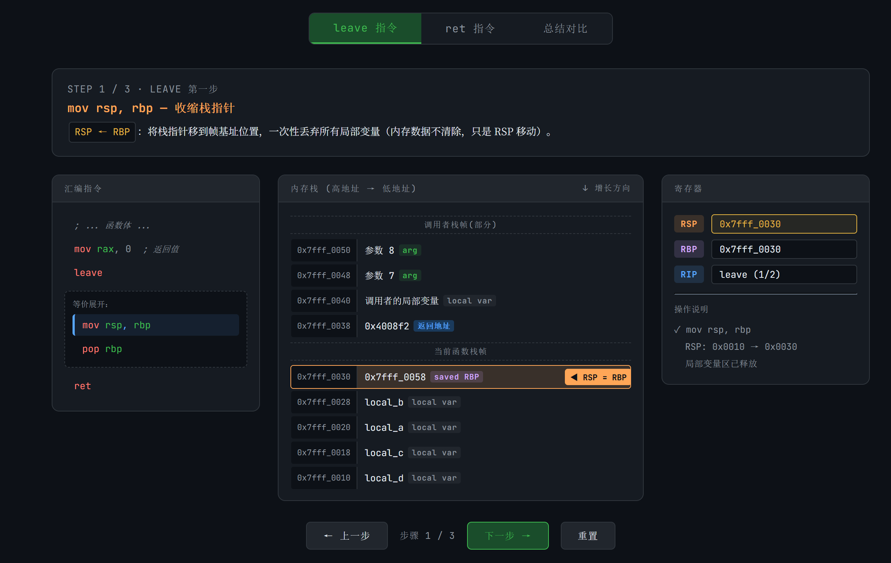
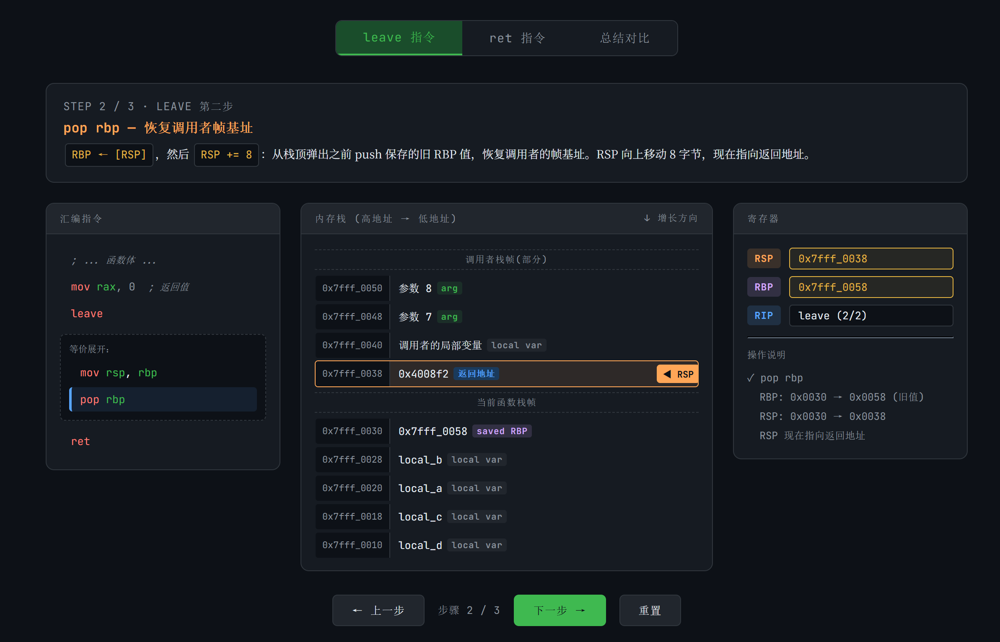
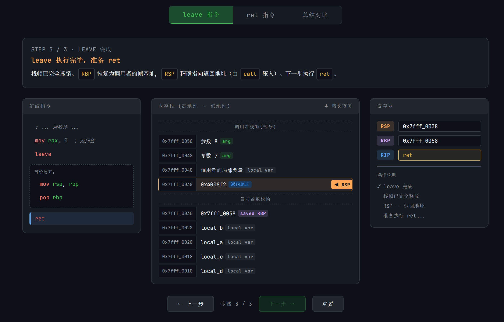
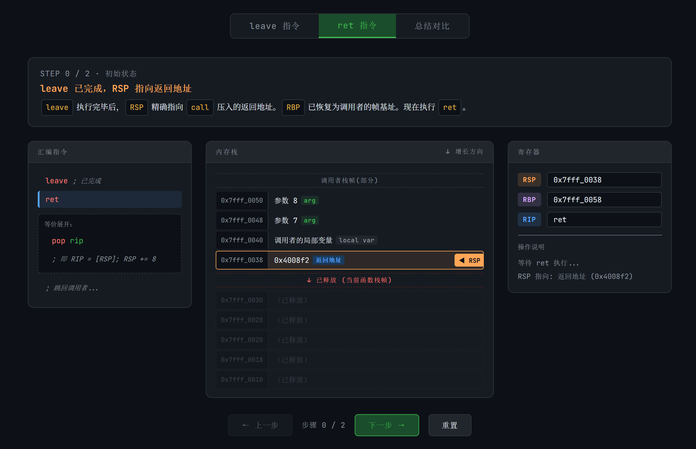
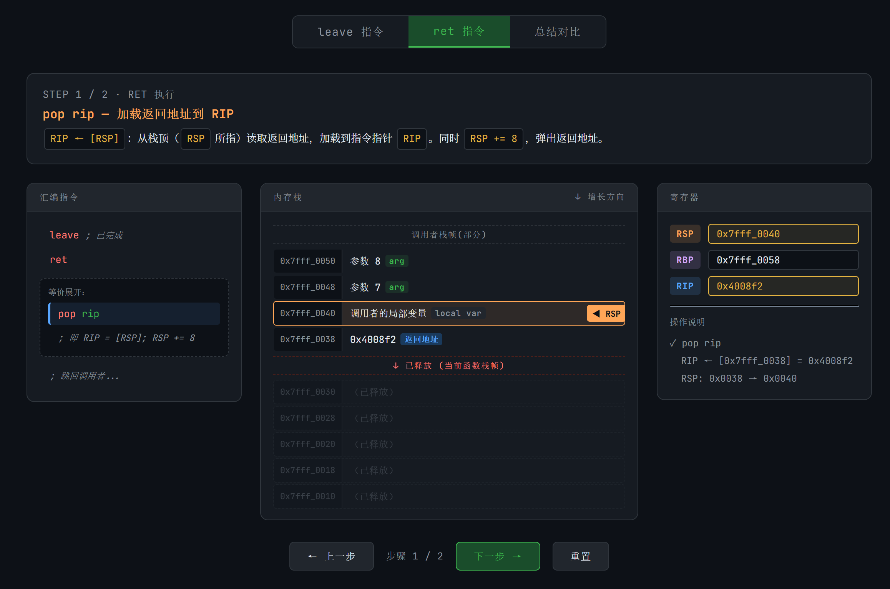
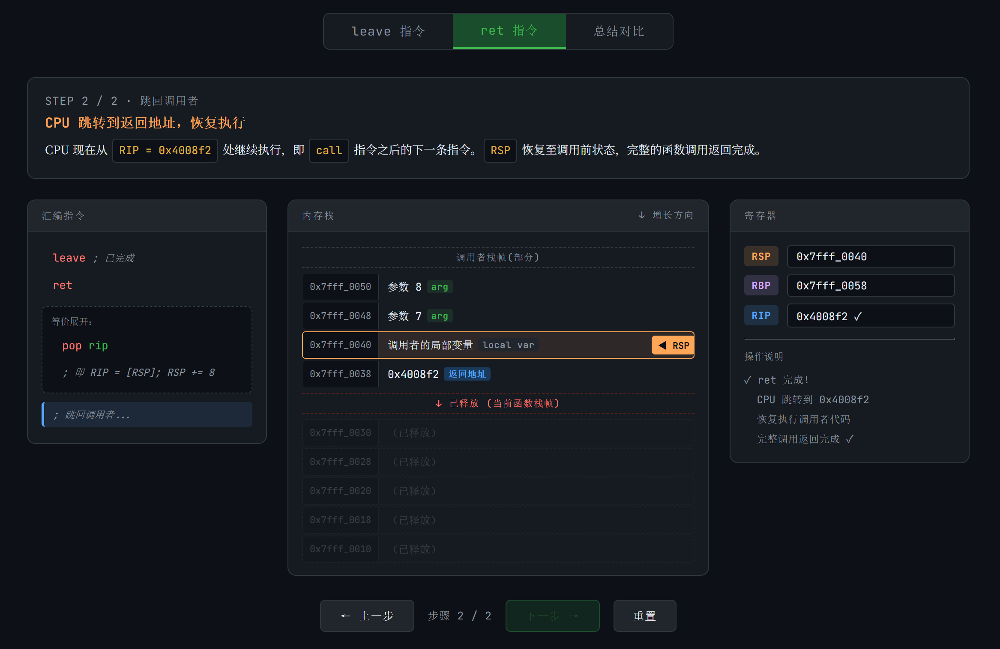

x86 汇编初步¶
本章节将会简单介绍一下汇编语言，汇编语言在逆向工程中占据的地位还是比较重要的。此章节并不会系统地去介绍整个汇编语言体系，而是以 CTF 逆向 为背景，介绍比较实用的部分。
如没有明确指出，本文采用的统一为x86汇编中的Intel风格
在x86汇编中除了Intel风格之外，还有一种风格叫做“AT&T风格”，最明显的一个区分特征就是AT&T风格下的寄存器前有%，立即数前有$。
同时AT&T风格的指令是从前往后读的（即助记符 源,目的），和Intel风格不同，注意区分。
(比如AT&T风格下movl %eax,%ebx是将%eax的值赋给%ebx)
前置知识：寄存器¶
为了方便读者理解下面的内容，猫猫决定先讲一下寄存器：
寄存器是中央处理器（CPU）内部的高速存储单元，用于临时存放指令、数据或地址。与内存相比，寄存器的访问速度极快，但数量有限（通常只有十几个到几十个）。在汇编语言中，寄存器通过名称直接引用（如 RAX、RBX 等）。
寄存器主要用于存储操作数，保存地址，暂存中间结果，控制程序状态等等……
看起来和高级语言里面“变量”的概念很像对吧？
以下表格展示了以 RAX 为例的寄存器嵌套关系，包含其各部分拆分：
| 寄存器 | 位宽 | 说明 |
|---|---|---|
| RAX | 64位 | 64位模式下的完整累加器寄存器 |
| EAX | 32位 | RAX 的低32位 |
| AX | 16位 | EAX 的低16位 |
| AH | 8位 | AX 的高8位（对应 EAX 的位 15-8） |
| AL | 8位 | AX 的低8位（对应 EAX 的位 7-0） |
说明：
- RAX 是 64 位寄存器，可用于存放 64 位数据或地址。
- EAX 是 RAX 的低 32 位，常用于 32 位操作。
- AX 是 EAX 的低 16 位，常用于 16 位操作。
- AH 和 AL 是 AX 的高、低 8 位，分别用于 8 位操作。修改 AH 会影响 AX 的高字节，但不会影响 AL，反之亦然。
这种分层设计允许程序灵活访问寄存器的不同部分，兼容 8/16/32/64 位操作。
你好，汇编¶
下面我们以一个简单的 Hello World 程序为背景，初步介绍汇编：
我们通过 GCC 将以上程序编译为 ASM 形式并输出，可以得到以下内容：
01 .section .rodata
02 .LC0:
03 .string "Hello, world!"
04 .text
05 .globl main
06 .type main, @function
07 main:
08 push rbp
09 mov rbp, rsp
10 sub rsp, 16
11 mov DWORD PTR [rbp-4], edi
12 mov QWORD PTR [rbp-16], rsi
13 mov edi, OFFSET FLAT:.LC0
14 call puts
15 mov eax, 0
16 leave
17 ret
这是一个很简单的执行过程，下面我们来简单的介绍一下这块汇编：
首先 .LC0: 定义了一个字符串，也即我们的 “Hello, world!”，它的作用就是告诉编译器这个字符串的位置（地址）。这种字符串字面量会被编译器放入 .rodata 只读数据段，在程序整个运行期间都存在。
下面就是 main 函数的汇编块了：
从第 8 行到第 12 行，进行的操作就是初始化堆栈，其中 8 ～ 10 行是为这个函数执行开辟适合的内存区域， 11 ～ 12 行是把参数保存到局部变量区域。
这里面提到的 rbp，rsp，edi 等都是寄存器，它们负责储存数据。
从第 13 行开始就进入了主要执行段：通过 mov 指令将字符串的 首地址 赋值给 edi，作为接下来 call 的函数的第一个参数，之后传参完毕，通过 call 指令调用 printf 函数（这里其实编译器进行了优化，因为 printf 只是输出固定字符串且带换行，编译器会优化为调用 puts（puts 会自动追加换行），因此字符串字面量本身不包含 \n ），输出字符串到屏幕；接着将 eax 赋值为 0，这里 eax 一般作为函数的返回值；之后 leave 然后 ret 返回，该函数就执行完毕了。
为什么传入字符串地址时赋值的是edi而不是rdi？
其实原因很简单：在这里，字符串的首地址是一个 32 位立即数。
在 x86-64 架构下，向 32 位寄存器 edi 写入数值时，CPU 会自动将对应的高 32 位（即 RDI[63:32]）清零。
因此，这里的操作mov edi, OFFSET FLAT:.LC0等价于是向 rdi 赋值。
这是 x86-64 的特性：写入 32 位寄存器会清零高 32 位，而写入 16 位或 8 位寄存器不会影响高位。
需要注意的是，这条规则只适用于 64 位模式下的程序；
在 32 位程序中不存在高 32 位，因此不会出现自动清零的现象。
在这个过程中，我们可以看到一些常见的汇编指令：mov、sub、call、ret 等，下面来说说它们的作用：
mov是赋值指令，它的格式为mov 目标, 源；sub是减法指令，其格式为sub 目标, 减去的值；call为调用指令，其格式为call 要调用的函数地址；ret和leave连用是函数返回时的指令序列，其中leave用于恢复堆栈框架，ret用于返回调用点。需要注意的是，leave指令一般会和ret配合使用以正确结束函数。
为了方便读者理解 ret 和 leave 是如何合作的，这里猫猫将 leave 和 ret 等价展开，并简单生成了一个基于Linux x86-64的演示动画。
其中 leave 等价于 mov rsp, rbp 和 pop rbp ，用于恢复调用前的栈帧；而 ret 等价于 pop rip：







其实pop rip的写法不太严谨喵……
严格来说，x86-64 架构中 rip 不能作为 pop 的显式操作数，pop rip 并不是一条合法的汇编指令。
ret 是专门的控制流指令，而不是 pop 的语法变体。
实际上这里的底层行为是：
不过嘛，为了方便理解咱们就不纠结这些小瑕疵啦~
前置知识：标志位¶
在正式讲解汇编指令之前，猫猫觉得有必要介绍一下什么是标志位，不然很多读者读到后面可能就会迷糊啦~
这里我们以 x86 架构为例：
在 x86 汇编语言中， 标志寄存器 （EFLAGS Register, 又名程序状态字 Program Status Word）用于存储指令执行结果的状态信息和控制处理器的工作模式。
其中，各个二进制位被称为 标志位 ，每个标志位有特定的含义。
根据功能，标志位可分为 状态标志（反映算术/逻辑运算结果）和 控制标志（控制处理器操作）。
| 标志位 | 名称 | 含义与置位条件 |
|---|---|---|
| CF | 进位标志 | 无符号数运算结果超出范围时置1，例如加法产生进位或减法产生借位。 |
| PF | 奇偶标志 | 运算结果低8位中“1”的个数为偶数时置1，否则置0。常用于数据校验。 |
| AF | 辅助进位标志 | 用于BCD码运算，表示低4位是否向高4位进位或借位。 |
| ZF | 零标志 | 运算结果为0时置1，否则置0。 |
| SF | 符号标志 | 运算结果的最高位（符号位）为1时置1，表示负数（对于有符号数）。 |
| TF | 陷阱标志 | 当置1时，处理器进入单步调试模式，每执行一条指令产生一次调试异常。 |
| IF | 中断允许标志 | 置1时允许可屏蔽中断响应，置0时禁止。 |
| DF | 方向标志 | 控制字符串操作指令的地址变化方向：DF=0时地址递增，DF=1时地址递减。 |
| OF | 溢出标志 | 有符号数运算结果超出机器所能表示的范围时置1，例如正+正得负或负+负得正。 |
说明：
- 状态标志（CF、PF、AF、ZF、SF、OF）通常由算术逻辑指令自动更新。
- 控制标志（如DF、IF、TF）可通过专用指令（如STD、CLD、STI、CLI）修改。
- 不同处理器（如x86-64）可能增加或调整部分标志位，但上述标志位是基本且通用的。
以上表格涵盖了主要的标志位，理解它们对于调试底层程序和掌握汇编语言至关重要。
常见汇编指令¶
介绍完标志位并了解了一些基本的汇编指令后，下面我们来看看 CTF 中常见的一些指令：
loop 循环指令¶
以 x86-64 为例（使用 rcx）：
上面的指令执行的是对 123 累加 236 次，从上面的代码中我们可以看到，rcx 寄存器保存的是循环次数，每次遇到 loop 指令时，loop 会先将 rcx 的数值减少 1，之后如果 rcx 依旧不为0，则跳转到对应的标签处（这里是s）；当其数值减少到 0 时，loop 指令就会停止跳转，继续执行下面的指令。
顺带一提，loop 不依赖标志位哦~
猫猫の碎碎念
老实说，loop指令在现代编译器中几乎不会生成惹……不过了解一下总归是好的，万一以后用到了捏~？
无条件跳转¶
无条件跳转指令为 jmp，其意思从字面上就可以看出来，只要是执行到 jmp 这里，无论什么情况，都会直接跳转到 label 的代码块中继续往下执行指令。
条件跳转¶
以上代码将 ebx 的值与 0 对比(cmp的比较方法是左减右的“作差法”，但不会修改ebx中的数值，只会影响标志位)，如果相等，则会跳转到 label 处，条件跳转指令 je 代表相等则跳转，还有其他与之条件不一样的条件跳转指令，一般条件跳转指令是与 cmp、test 指令混在一起用的。以上代码也可以用 test 来写：
test 是 仅影响标志位 的按位与指令，在本例中 test 等价于计算 ebx & ebx，并根据计算结果更新标志位。
在本例中，我们关心的是 ZF 标志位，当计算结果为0时该标志位将被 置1 。
而 jz 语句表示当 ZF 标志位为 1 时就跳转到label，在本例中的实现效果与 cmp 相同。
下面是一些常见的条件跳转指令：
| 指令 | 别名 | 英语全称 | 跳转条件 （标志位） | 含义 |
|---|---|---|---|---|
JE |
JZ |
Jump if Equal / Jump if Zero | ZF = 1 | 等于 / 结果为零 |
JNE |
JNZ |
Jump if Not Equal / Jump if Not Zero | ZF = 0 | 不等于 / 结果不为零 |
JS |
— | Jump if Sign | SF = 1 | 结果为负 |
JNS |
— | Jump if Not Sign | SF = 0 | 结果为正或零 |
JP |
JPE |
Jump if Parity / Jump if Parity Even | PF = 1 | 奇偶位为偶 |
JNP |
JPO |
Jump if Not Parity / Jump if Parity Odd | PF = 0 | 奇偶位为奇 |
JO |
— | Jump if Overflow | OF = 1 | 有符号溢出 |
JNO |
— | Jump if Not Overflow | OF = 0 | 无溢出 |
JC |
JB / JNAE |
Jump if Carry / Jump if Below / Jump if Not Above or Equal | CF = 1 | 进位 / 无符号小于 |
JNC |
JAE / JNB |
Jump if Not Carry / Jump if Above or Equal / Jump if Not Below | CF = 0 | 无进位 / 无符号大于等于 |
JBE |
JNA |
Jump if Below or Equal / Jump if Not Above | CF = 1 或 ZF = 1 | 无符号小于等于 |
JA |
JNBE |
Jump if Above / Jump if Not Below or Equal | CF = 0 且 ZF = 0 | 无符号大于 |
JL |
JNGE |
Jump if Less / Jump if Not Greater or Equal | SF ≠ OF | 有符号小于 |
JGE |
JNL |
Jump if Greater or Equal / Jump if Not Less | SF = OF | 有符号大于等于 |
JLE |
JNG |
Jump if Less or Equal / Jump if Not Greater | ZF = 1 或 SF ≠ OF | 有符号小于等于 |
JG |
JNLE |
Jump if Greater / Jump if Not Less or Equal | ZF = 0 且 SF = OF | 有符号大于 |
位运算¶
下面是一些常见的位运算指令：
| 指令 | 示例 | 操作 | 结果保存 | 含义 |
|---|---|---|---|---|
AND |
AND AX, BX |
AX = AX & BX，并设置标志位 | 是，存入目标操作数 | 按位与运算 |
OR |
OR AX, BX |
AX = AX | BX，并设置标志位 | 是，存入目标操作数 | 按位或运算 |
XOR |
XOR AX, BX |
AX = AX ^ BX，并设置标志位 | 是，存入目标操作数 | 按位异或运算 |
NOT |
NOT CX |
CX = ~CX | 是，存入目标操作数 | 按位取反（不影响标志位） |
TEST |
TEST AX, BX |
AX & BX，并设置标志位 | 否，结果丢弃 | 按位与运算（仅影响标志位） |
特别的，AND、OR、XOR 执行后会将 CF 和 OF 清零，而其他的寄存器（如SF、ZF、PF）则会根据结果更新。
话说逻辑运算后为什么会把 AF 设为 undefined？
由于逻辑运算不涉及加减法的半字节进位，因此 AF 在这些指令后被定义为未定义状态，程序不应依赖其值。
lea 整数计算¶
其使用格式为：lea rdx,[my_var]，将 my_var 的 地址 赋值给 rdx 寄存器。
需要注意的是，lea 不会访问内存，也不会读取 [my_var] 中的内容，它只是把“地址这个数值”放入寄存器，等价于：rdx = &my_var;。
在实际使用中，lea 常被用于计算地址偏移，例如 lea rax, [rbx + rcx*4 + 8]，这条指令的真实含义是：rax = rbx + rcx*4 + 8。这里的 [rbx + rcx*4 + 8] 只是使用了 x86 的寻址格式 [base + index*scale + displacement] 来进行整数运算，并不会去访问该地址所指向的内存内容。
对比来看，mov rax, [rbx + rcx*4 + 8] 的含义是：rax = *(rbx + rcx*4 + 8)，即先计算地址，再访问内存读取数据；
而 lea 仅计算表达式本身，不发生解引用。
正因如此，lea 有时也被编译器当作一种“廉价的算术指令”来使用——它可以在一条指令内完成乘法（scale=1/2/4/8）、加法与常数偏移的组合运算，同时不影响任何标志位。例如 lea rax, [rbx + rbx*4] 等价于计算 rbx * 5。
因此，看到 lea rax, [表达式] 时，应理解为：rax = 表达式的计算结果。
xchg 数值交换¶
其使用格式为 xchg ax,bx 将 ax 和 bx 的数值交换。
关于函数传参¶
在汇编中，我们有时候需要知道参数被保存在哪个寄存器里，这里以常见的两种调用约定为例：
整数或指针类型的返回值通常保存在 rax 中（32 位时为 eax）。
System V AMD64 ABI（Linux / macOS 下 GCC/Clang 默认使用）：
函数参数按从左到右的顺序保存在 rdi、rsi、rdx、rcx、r8、r9 中，超出部分通过栈传递。
Windows x64 调用约定：
函数参数按从左到右的顺序保存在 rcx、rdx、r8、r9 中，超出部分通过栈传递。
同时，Windows x64 要求调用者预留 32 字节的 shadow space ，即使函数没有用到这 4 个参数，也必须预留。
有时候根据函数调用约定以及编译器和平台的不同，这个储存规律也会发生改变，我们需要根据当时情况动态调整。